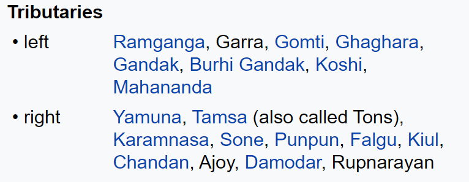
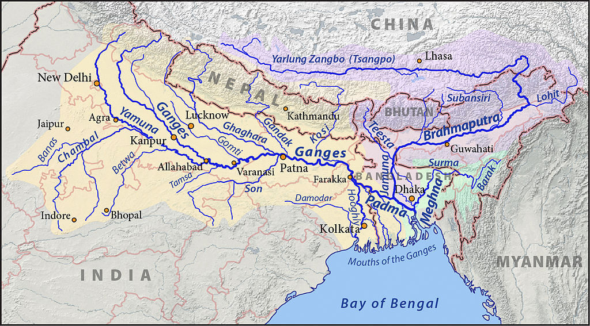

The Ganga River System
Introduction
The Ganga river system outspreads in India, Tibet (China), Nepal and Bangladesh. It is the largest river basin in India and accounts for about one-fourth of the total area of the country. It covers states of Uttar Pradesh, Madhya Pradesh, Rajasthan, Bihar, West Bengal, Uttarakhand, Jharkhand, Haryana, Chhattisgarh, Himachal Pradesh and Union Territory of Delhi.
- The Ganga is formed from the 6 headstreams and their five confluences.
- The Alaknanda River meets the Dhauliganga River at Vishnuprayag, the Nandakini River at Nandprayag, the Pindar River to form the Ganga main stream.
- The Bhagirathi, considered to be the source stream: rises at the foot of Gangotri Glacier, at Gaumukh, at an elevation of 3892m and fanning out into the 350km wide Ganga delta, it finally empties into the Bay of Bengal.
- From Devapryag the river is called as Ganga.
- Ganga debouches [emerge from a confined space into a wide, open area] from the hills into the plain area at It is joined by the Yamuna at Allahabad.
- Near Rajmahal Hills it turns to the south-east.
- At Farraka, it bifurcates into Bhagirathi-Hugli in West Bengal and Padma-Meghna in Bangladesh (it ceases to be known as the Ganga after Farraka).
- Brahmaputra (or the Jamuna as it is known here) joins Padma-Meghna at.
- The total length of the Ganga river from its source to its mouth (measured along the Hugli) is 2,525 km.
- Haridwar, Kanpur, Soron, Kannauj, Allahabad, Varanasi, Patna, Ghazipur, Bhagalpur, Mirzapur, Ballia, Buxar, Saidpur, and Chunar are the important towns.
- It has long been considered holy by Hindus and worshipped as the goddess Ganga in Hinduism.
The Five Prayags
- Devaprayag, the place of confluence of Bhagirathi river and Alaknanda river.
- Rudraprayag, the place of confluence of Mandakini river and Alaknanda river.
- Nandaprayag, the place of confluence of Nandakini river and Alaknanda river.
- Karnaprayag, the place of confluence of Pindar river and Alaknanda river.
- Vishnuprayag, the place of confluence of Dhauliganga river and Alaknanda river.
Ganga–Brahmaputra Delta
- Before entering the Bay of Bengal, the Ganga, along with the Brahmaputra, forms the largest delta of the world between the Bhagirathi/Hugli and the Padma/Meghna covering an area of 58,752 sq km.
- The coastline of the delta is a highly indented area.
- The delta is made of a web of distributaries and islands and is covered by dense forests called the
- A major part of the delta is a low-lying swamp that is flooded by marine water during high tide.
Alaknanda
- It is one of the headstreams of the Ganga.
- It rises at the confluence and feet of the Satopanth and Bhagirath glaciers in Uttarkhand.
- It meets the Bhagirathi River at Devprayag after which it is called as the Ganga.
- Its main tributaries are the Mandakini, Nandakini, and Pindar rivers.
- The Alaknanda system drains parts of Chamoli, Tehri, and Pauri districts
- The Hindu pilgrimage center of Badrinath and the natural spring Tapt Kund lie along the banks of the Alaknanda River
- At Its origin, Lake Satopanth is a triangular lake located at a height of 4402m and named after the Hindu trinity Lord Brahma, Lord Vishnu, and Lord Shiva.
Bhagirathi
- It is one of the two most important headstreams of the Ganga which meets the Alaknanda at Devprayag to form the Ganga
- It rises at the foot of Gangotri Glacier, at Gaumukh, at an elevation of 3892m at the base of Chaukhamba peak in the Uttarkashi district of Uttarakhand
- The upper catchment of the river is glaciated
- It cuts spectacular gorges in its middle course where it has cut through granites and crystalline rocks of the central Himalayan axis
- Gangotri, Uttarkashi, and Tehri are important settlements along the river.
Dhauliganga
- It originates from Vasudhara Tal, perhaps the largest glacial lake in Uttarakhand.
- Dhauliganga is one of the important tributaries of Alaknanda, the other being the Nandakini, Pindar, Mandakini and Bhagirathi.
- Dhauliganga is joined by the Rishiganga river at Raini.
- It merges with the Alaknanda at Vishnuprayag.
- There it loses its identity and the Alaknanda flows southwest through Chamoli, Maithana, Nandaprayag, Karnaprayag until it meets the Mandakini river, coming from the north at Rudraprayag.
- After subsuming Mandakini, the Alaknanda carries on past Srinagar, before joining the Ganga at Devprayag.
- Alaknanda then disappears and the mighty Ganga carries on its journey, first flowing south then west through important pilgrimage centres such as Rishikesh and finally descending into the Indo-Gangetic plains at Haridwar.
- Tapovan Vishnugad Hydropower Project being constructed on the Dhauliganga.
Rishiganga River
- It is a river in the Chamoli district, Uttarakhand.
- It springs from the Uttari Nanda Devi Glacier on the Nanda Devi Mountain.
- It is also fed from the Dakshini Nanda Devi Glacier.
- It flows through the Nanda Devi National Park and merges into the Dhauliganga River near the village Raini.
Major Tributaries of the Ganga River

In this article, We will read mainly Left Bank Tributaries of The Ganga River.
Ramganga
- A tributary of the Ganga river, it drains south-western Kumaun.
- Ramganga River originates in the southern slopes of Dudhatoli Hill in the Chamoli district of Uttarakhand.
- It is fed by springs emanating from the reservoirs of underground water
- The prominent geomorphic features found in its tract across the lower Himalayan hills of Almora district are incised meanders, paired and unpaired terraces, interlocking spurs, waterfalls, rock benches, cliffs, and towering ridges
- It also flows through the dun valley of Corbett National Park.
- There is a dam built across the Ramganga at Kalagarh
- It finally meets the Ganga near Kannauj.
- Bareilly city is situated on its banks.
Gomti
- It originates from Gomat Taal which formally is known as Fulhaar jheel, near Madho Tanda, Pilibhit in UP.
- It extends 900km through UP and meets the Ganges River in Ghazipur.
- At the Sangam of Gomti and Ganga, the famous Markandey Mahadeo temple is situated.
- The most important tributary is the Sai River, which joins near Jaunpur
- The cities of Lucknow, Lakhimpur Kheri, Sultanpur and Jaunpur are located on the banks of Gomti
- The river cuts the Jaunpur city into equal halves and becomes wider in Jaunpur.
Ghaghara
- The Ghaghara originates in the glaciers of Mapchachungo.
- Alternatively known as Karnali or Kauriala, it is a trans-boundary perennial river originating from the Tibetan plateau near Lake Mansarovar.
- It cuts through the Himalayas in Nepal and is joined by the Sharda River at Brahmaghat in India
- It is a major left-bank tributary of the Ganga and joins it at Chhapra in Bihar.
- Its total length is 1080km
- This river is the main source of water in Bara-Banki District of UP.
- Rapti, Chhoti Gandak, Sharda, and Sarju are the major tributaries of this river.
Sharda
- The Sarda river rises in the Milam glacier in the Nepal Himalayas where it is known as the Goriganga.
- The Sharda originates from the Greater Himalayas at Kalapaani at an altitude of 3600m in the Pithoragarh District of Uttarakhand.
- Kalapaani is situated on the route of Kailash Manasarovar Yatra tour
- It is named as River Mahakali in Nepal and the name is after the Goddess Kali whose temple is situated in Kalapaani near the Lipu-Lekh pass at the border between India and the Tibet
- The river borders the Nepalese Mahakali Zone and Uttarkhand.
- The river flows in a gorge section in the upper region.
- The Mahakali after it descends into the plains into India is known as Sarda, which meets the Ghaghara.
Sarayu
- (Also called Sarju). It is a river that flows through UP.
- Sarayu is a river that originates at a ridge south of Nanda Kot mountain in Bageshwar district in Uttarakhand.
- This river is of ancient significance, finding mentions in Vedas and Ramayana
- It is a left-bank tributary of River Ghaghara
- On Ram Navami, the festival that celebrates the birthday of Lord Ram, thousands of people take a dip in the sacred river Sarayu at Ayodhya.
Rapti
- The Rapti rises south of a prominent E-W ridgeline midway b/w the western Dhaulagiri Himalaya and the Mahabharat Range in Nepal
- The mainstream of this river rises as a spring in the southern slopes of the Lower Himalayas
- The river is essentially fed by underground water
- It has the tendency of recurrent floods that led to its nickname “Gorakpur’s Sorrow”
- Lungri Khola, Jhimruk Khola, Ami River, Rohini River are the major left-bank, and Arun Khola is the right bank tributary of the Rapti.
Gandak
- It is formed by the union of the Kali and Trisuli rivers, which rise in the Great Himalayan Range in Nepal
- From this junction to the Indian border the river is called the Narayani
- It enters the Ganga river opposite Patna in a place called Sonepur after a winding course of 765 km
- The Burhi Gandak flows parallel to and east of the Gandak River
- The upper catchment area of the river is bleak and desolate lying in the rain shadow area of the Himalayan range
- The middle and the lower courses of the river flows through the V-shaped valleys, incised meanders, and have paired and unpaired terraces on either sides.
Burhi Gandak
- This 320km long river originates from Chautarva Chaur near Bisambharpur in the district of West Champaran district of Bihar
- It initially flows through the East Champaran district.
- After flowing for a distance of about 56km the river takes a southerly turn where two rivers – the Dubhara and the Tour- join it.
- Thereafter, the river flows in a south-easterly direction through the Muzaffarpur district for about 32km.
- It flows parallel to and east of the Gandak River in an old channel.
- The main tributaries of the Burhi Gandak are – Masan, Balor, Pandai, Sikta, Tilawe, Tiur, Dhanauti, Kohra, and Danda
- Samastipur is situated on it.
- There is no major or medium project over the Burhi Gandak river system.
.jpg)
Kosi
- Aka Saptakoshi for its 7 Himalayan tributaries, it is an antecedent transboundary river flowing through Nepal and India
- Some of the rivers of the Kosi system, such as the Arun, the Sun Kosi, and the Bhote Koshi, originate in the Tibet
- This 729km long river is one of the largest tributaries of the Ganga and joins it at Kursela in Kathiar district
- The highest peak in the world, Mt.Everest and the Kanchenjunga are in the Kosi catchment.
- Bagmati is an important tributary of the Kosi.
- Over the last 250 years, the Kosi river has shifted its course over 120km from east to west
- Its unstable nature has been attributed to the heavy silt it carries during the monsoon season, Due to this, it is also termed as “The Sorrow of Bihar”.
Son River
- The Son, 784km long, originates near Amarkantak in MP, just east of the headwater of the Narmada River, and flows north-northwest through MP before turning sharply eastward where it encounters the southwest-northeast running Kaimur Range
- The Son parallels the Kaimur hills, flowing east-northeast through UP, Jharkhand, and Bihar states to join the Ganga just above Patna
- Geologically. The lower valley of the Son is an extension of the Narmada Valley, and the Kaimur Range an extension of the Vindhya Range
- Dehri is the major town situated on Son River.
- Tributaries of Son river
- Right – Gopad Rive, Rihand River, Kanhar River, North Koel River
- Left – Ghaggar River, Johila River, Chhoti Mahanadi River
- Its chief tributaries are the Rihand and the North Koel. It is largely forested and sparsely populated.
Son river tributaries
Rihand
- The Rihand rises from Matiranga Hills in the region southwest of the Mainpat plateau, which is about 1000m in Chhatisgarh
- The Rihand and its tributaries form a fertile plain in the central part of the district stretching from around Ambikapur to Lakhanpur and Pratappur
- Thereafter, it flows north into Sonbhadra district of UP, where it joins the Son.
- Its principal tributaries are the Mahan, the Morana(Morni), the Geur, the Gagar, the Gobri, the Piparkachar, the Ramdia, and the Galphulla
- The Rihand Dam was constructed across the Rihand River near Pipri in Sonbadra district of Mirzapur division in 1962 for hydropower generation: the reservoir impounded behind the dam is called Govind Ballabh Pant Sagar.
North Koel
- This 260km long river rises on the Ranchi plateau and enters Palamau division below Netarhat near Rud
- After flowing nearly due west for about 30km, it turns north at an almost complete right angle through a gorge at Kutku and flows through the centre of the district till it falls into the Son a few miles northwest of Haidamagar
- The North Koel, along with its tributaries, meanders through the northern part of Betla National Park
- The principal tributaries are the Auranga, the Amanat, and the Burha.
Namami Gange Yojana
- Namami Gange Project or Namami Ganga Yojana is an ambitious Union Government Project which integrates the efforts to clean and protect the Ganga river in a comprehensive manner.
- It its maiden budget, the government announced Rs. 2037 Crore towards this mission.
- The project is officially known as the Integrated Ganga Conservation Mission project or ‘Namami Ganga Yojana’. This project aims at Ganga Rejuvenation by combining the existing ongoing efforts and planning under it to create a concrete action plan for the future.
- It is being operated under the Department of Water Resources, River Development, and Ganga Rejuvenation, Ministry of Jal Shakti.
- It has an Rs. 20,000-crore, centrally-funded, non-lapsable corpus and consists of nearly 288 projects.
- Will cover 8 states, 47 towns & 12 rivers under the project.
- Over 1,632-gram panchayats on the banks of Ganga to be made open defecation-free by 2022.
- Several ministries are working with the nodal Water Resources Ministry for this project includes – Environment, Urban Development, Shipping, Tourism & Rural Development Ministries.
- The prime focus will be on involving people living on the river’s banks in this project.
- The program is being implemented by the National Mission for Clean Ganga (NMCG), and its state counterpart organizations i.e., State Program ManagementGroups (SPMGs).
- NMCG is the implementation wing of National Ganga Council (set in 2016; which replaced the National Ganga River Basin Authority (NRGBA).
- Setting river centric urban planning process to facilitate better citizen connects, through interventions at Ghats and Riverfronts.
- Expansion of coverage of sewerage infrastructure in 118 urban habitations on banks of Ganga.
- Enforcement of Ganga specific River Regulatory Zones.
- Development of rational agricultural practices & efficient irrigation methods.
- Setting Ganga Knowledge Centre.
- Pollution will be checked through
- Treatment of wastewater in drains by applying the bio-remediation method.
- Treatment of wastewater through in-situ treatment.
- Treatment of wastewater by the use of innovative technologies.
- Treatment of wastewater through municipal sewage & effluent treatment plants.
- Introducing immediate measures to arrest the inflow of sewage.
- Introducing PPP approach for pollution control.
- Introduction of 4-battalion of Territorial Army Ganga Eco-Task Force.
Other Initiatives Taken
- Ganga Action Plan: It was the first River Action Plan that was taken up by the Ministry of Environment, Forest and Climate Change in 1985, to improve the water quality by the interception, diversion, and treatment of domestic sewage.
- The National River Conservation Plan is an extension to the Ganga Action Plan. It aims at cleaning the Ganga river under Ganga Action Plan phase-2.
- National River Ganga Basin Authority (NRGBA): It was formed by the Government of India in the year 2009 under Section-3 of the Environment Protection Act, 1986.
- It declared the Ganga as the ‘National River’ of India.
- Clean Ganga Fund: In 2014, it was formed for cleaning up of the Ganga, setting up of waste treatment plants, and conservation of biotic diversity of the river.
- Bhuvan-Ganga Web App: It ensures the involvement of the public in the monitoring of pollution entering into the river Ganga.
- Ban on Waste Disposal: In 2017, the National Green Tribunal banned the disposal of any waste in the Ganga.